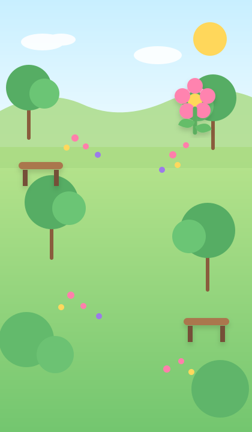
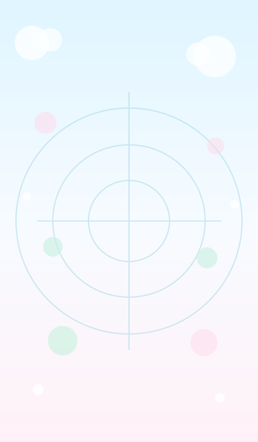
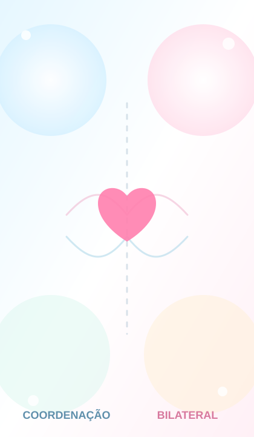

Pequenas conquistas
movem grandes caminhos!
Missões terapêuticas com movimento, psicopedagogia, ludicidade e adaptação individual — no tempo de cada criança.

Escolha uma atividade
Brincar, aprender, movimentar e conquistar.
Cards da Tia Tati
Orientação, incentivo e acolhimento em cada etapa.
Caminho Seguro
Dirija com atenção até o destino. Brincar também é terapêutico.
O carrinho azul
está pronto!
Escolha o destino, a rota e como dirigir. No caminho, observe placas, pedestres e curvas.

Trânsito seguro também se aprende brincando.
Observe placas, faixa de pedestres e velocidade.
Abelhinha e a Flor
Ajude a abelhinha a levar o pólen até a flor.
Voe com cuidado
até a flor!
Observe a trilha, acompanhe com os olhos e conduza a abelhinha com calma. A ajuda aparece aos poucos quando necessário.


Aprender com a natureza.
As abelhas ajudam as flores ao transportar pólen de uma para outra.
Alcance ao Alvo
Toque nos alvos no seu tempo e acompanhe cada conquista.
Encontre, alcance
e conquiste!
Os alvos aparecem um de cada vez. A atividade pode estimular alcance funcional, atenção, lateralidade e cruzamento da linha média.

Sem pressa e sem “errar”.
O alvo recebe pista visual progressiva quando necessário e cada toque válido gera reforço positivo.
Duas Mãos
Use os dois lados do corpo em desafios graduais e acolhedores.
Duas mãos,
uma conquista!
Escolha o tipo de desafio e a quantidade de rodadas. A atividade trabalha simultaneidade, alternância e alcance bilateral sem transformar atraso em erro.

✋ 🤚Sem punição pelo tempo.
Se os toques não acontecerem dentro da janela escolhida, a mesma rodada é oferecida novamente com uma pista visual.
Atividade
Montar meu circuito
Escolha as missões. O circuito combina tarefa, pausa, feedback e progressão sem transformar erro em punição.
Modo Fisio
Intervenções da Dra. Tatiana
O app usa foco externo na tarefa, tempo para processamento e reforço sem excesso de fala.
Estúdio de Voz
Grave cada frase diretamente no celular. A gravação fica neste aparelho e terá prioridade durante as atividades. Sem voz sintética estranha.
Relatórios das sessões
Que esforço lindo!
Pequenas conquistas constroem grandes histórias.